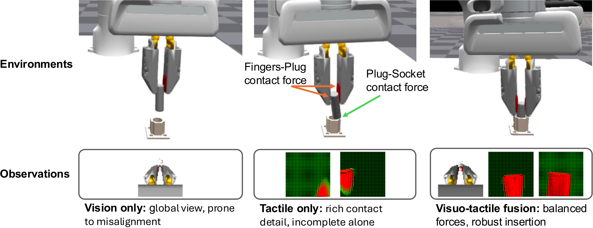
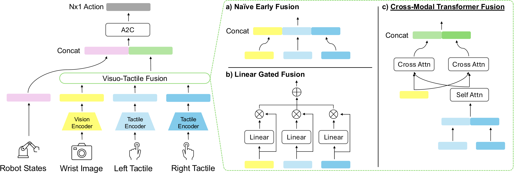
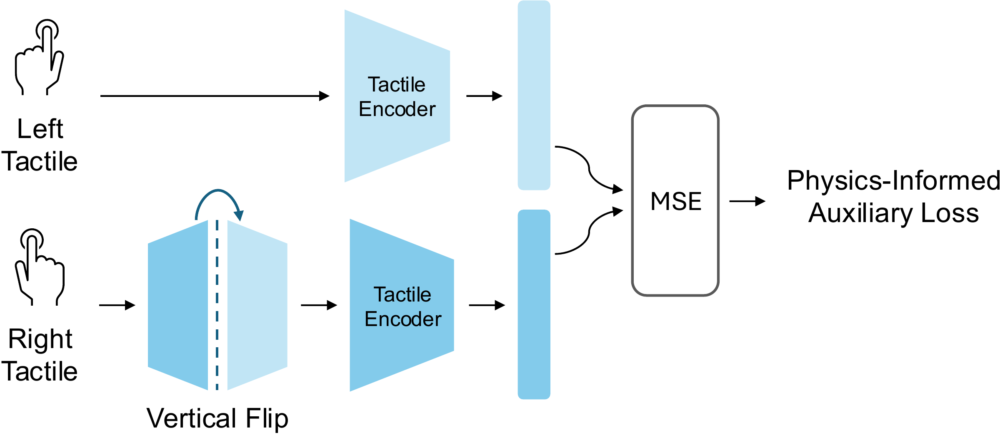
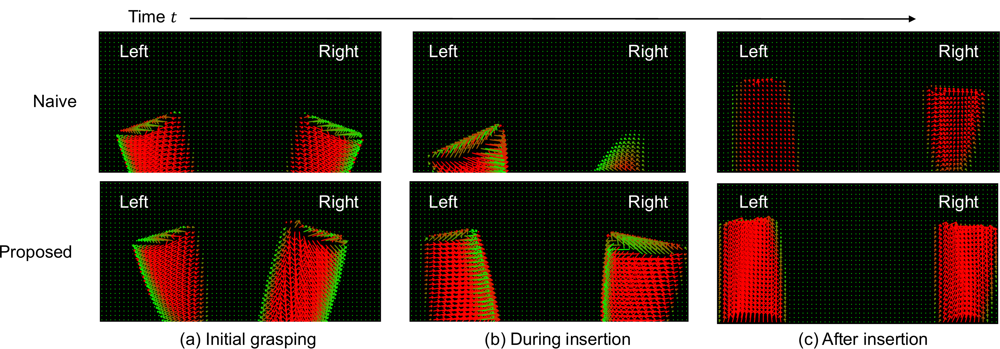

Contact-rich tasks like plug insertion break down when you rely on vision alone — close-range alignment demands force-level precision that cameras simply cannot provide. Tactile sensing fills that gap, but naïve fusion of vision and touch often hurts more than it helps. The core issue is that raw concatenation dilutes the already-weak tactile signal.
We address this with two ideas: a Cross-Modal Transformer (CMT) that learns structured alignment between visual and tactile features through self- and cross-attention, and a bilateral symmetry loss grounded in Newton’s Third Law — if both fingers grasp the same object, their tactile embeddings should mirror each other. This simple physics-informed constraint stabilizes training without any extra labels.



| Method | Privileged | Reduced | Vision | Tactile | Succ. Rate (%) |
|---|---|---|---|---|---|
| Privileged | ✓ | 96.74 | |||
| + Contact Forces | ✓ | 98.96 (+2.22) | |||
| Tactile | ✓ | ✓ | 91.41 | ||
| Vision | ✓ | ✓ | 93.23 | ||
| Vision + Contact Forces | ✓ | ✓ | 96.09 (+2.86) | ||
| Fusion – Naive | ✓ | ✓ | ✓ | 92.97 | |
| Fusion – Gated | ✓ | ✓ | ✓ | 94.53 (+1.56) | |
| Fusion – CMT (ours) | ✓ | ✓ | ✓ | 96.22 (+3.25) | |
| Fusion – Gated + Symmetry Reg. | ✓ | ✓ | ✓ | 95.05 (+2.08) | |
| Fusion – CMT + Symmetry Reg. (ours) | ✓ | ✓ | ✓ | 96.59 (+3.62) |
On the TacSL benchmark, CMT with symmetry regularization outperforms naïve early fusion (92.97%) and linear gated fusion (94.53%) by a clear margin, and nearly matches the privileged wrist + contact-force setting (96.09%) — despite using only realistic tactile images as input.
Adding tactile sensing to vision consistently improves success rates by +2.2% to +2.8% across all fusion strategies, confirming that touch provides genuinely complementary information for precise alignment. Tactile-only policies already reach 91.41%, and on the screw insertion task tactile alone hits a perfect 100%.

@inproceedings{lee2026symmetry,
title = {Symmetry-Aware Fusion of Vision and Tactile Sensing
via Bilateral Force Priors for Robotic Manipulation},
author = {Lee, Wonju and Grimaldi, Matteo and Yu, Tao},
booktitle = {IEEE International Conference on Robotics and
Automation (ICRA)},
year = {2026}
}